Vector Cross Product
The cross product between two vectors produces a new vector which is perpendicular to both. The concept of the cross product for points is only meaningful if we interpret the points as vectors from the origin. Specifically, suppose the following two vectors are defined:
u = Vector3d( ux, uy, uz )
v = Vector3d( vx, vy, vz )
The result of multiplying those is seen below.
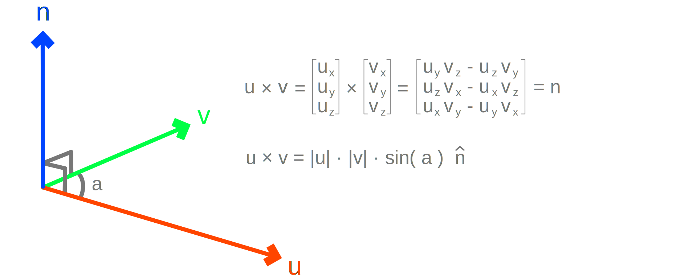
""" General
"""
n = Vector3d(
u.Y * v.Z - u.Z * v.Y,
u.Z * v.X - u.X * v.Z,
u.X * v.Y - u.Y * v.X )
""" Rhino
"""
n = Vector3d.CrossProduct( u, v )
Algebraic Properties
-
The cross product is not commutative:
u × v ≠ v × u. It is anticommutative in the sense that the direction of the result is flippedu × v = -( v × u ). -
The cross product is not associative:
( u × v ) × w ≠ u × ( v × w ). We cannot regroup the terms arbitrarily and expect the same result. -
The cross product is also defined as:
u × v = |u| * |v| * sin( a ) * n, where|u|and|v|are the lengths of the vectors,ais the angle between the vectors andnis a unit-length vector perpendicular to bothuandv. -
The cross product of a vector
uwith itselfu × uis equal to the null vectorO = [0.0, 0.0, 0.0]becauseu × u = |u| * |u| * sin( 0 ) * n = O
Geometric Interpretation
The cross product, like the dot product, is extremely rich geometrically. It is broadly associated with the notion of projection in the sense of "raising" perpendiculars as opposed to "dropping" which is associated with the dot product.
Measuring Areas
The units of the cross product's magnitude are in square meters because the length of vectors are in meters and the sine has no units. We can reach the same conclusion from the alternative definition. However, unlike the dot product, which has no direct intuitive meaning, the cross product's length measures the area spanned by the two vectors.
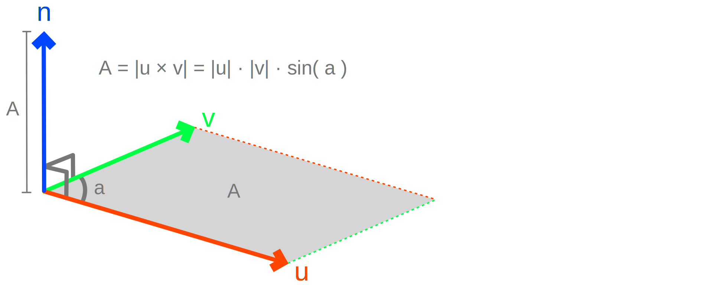
""" Inputs
"""
u = Vector3d( ux, uy, uz )
v = Vector3d( vx, vy, vz )
""" Outputs
"""
A = Vector3d.CrossProduct( u, v ).Length
Projected Length
When one of the two vectors u and v in a cross product is unit length, say |u| = 1, then the length of the result |u × v| conveys a notion of projected length in the same sense as was with the dot product. Notice that from basic trigonometry sin( a ) = opposite / hypotenuse, that is the sine of angle equals the length of the opposite side of a right triangle, divided by the length of its hypotenuse. With a few transformations, as seen below, we can conclude that the length of a cross product encodes the length of the opposite side.
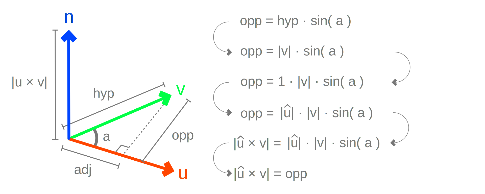
Vector Analysis
We can take this further by computing the triple or also known as the sandwich product between two vectors u × v × u. By doing so, we can construct a vector which encodes the projected length of the opposite side, back into the plane spanned by u and v. We can interpret the triple product operation as a transformation which transfers lengths among orthogonal directions, as long as one of the vectors, here |u| = 1, is unit-length. And with that, we have developed the tools to analyze a vector v into two orthogonal directions, where the horizontal component is given by the u · v · u and the vertical by u × v × u.
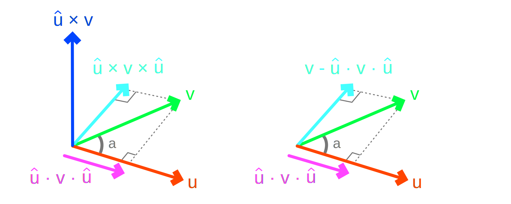
While the dot and cross product sandwich pair is interesting, the cross product is technically not required to perform vector analysis. The dot product suffices because the orthogonal component can be computed as v - u · v · u. Using only addition and multiplication to orthonormalize vectors is also known as the Gram-Schmidt method.
Matching Directions
The cross product of two vectors u and v with zero length result |u × v| = 0, implies that the vectors are parallel. This is independent of their magnitude, that is we do not have to normalize the vectors. It is also the case when the two vectors have exactly the same or opposite direction.
This property can be used for checking for exact (mis)alignment between vectors, but again the dot product is a better option because we don't need to construct new vectors and because we can distinguish between the two cases of same/opposite direction.
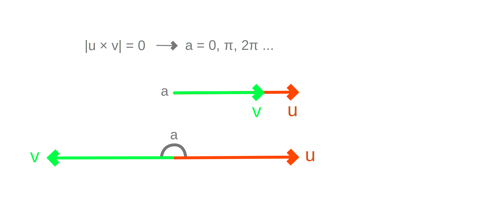
""" Inputs
"""
u = Vector3d( ux, uy, uz )
v = Vector3d( vx, vy, vz )
""" Outputs
"""
if( Vector3d.CrossProduct( u, v ).Length <= 1e-5 ):
print( 'The vectors are parallel' )
Perpendicular Directions
From the trigonometric definition, two unit vectors u and v with a cross product of |u × v| = 1, implies that the vectors are perpendicular to one another, because sin( ±π/2 ) = ±1. Note that because the length of a vector is always positive the sign of the sine is suppressed.
Therefore, to test whether two vectors are perpendicular we can use the cross product and check if its length is exactly or near one. However, the same test can be performed more efficiently using the dot product because it involves fewer operations.
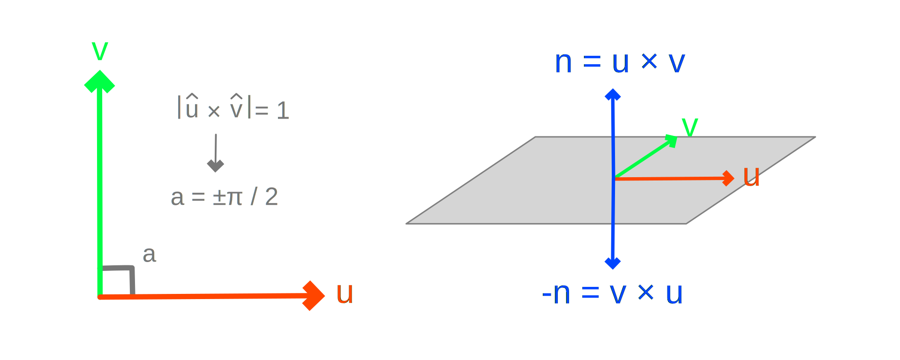
""" Inputs
"""
u = Vector3d( ux, uy, uz )
v = Vector3d( vx, vy, vz )
""" Outputs
"""
if( ( 1.0 - Vector3d.CrossProduct(
u / u.Length, v / v.Length ).Length ) <= 1e-5 ):
print( 'The vectors are perpendicular' )
Computing Angles
When both vectors have unit length |u| = 1 and |v| = 1, the cross product can be used for measuring the angle between the vectors a = arcsin( |u × v| ). In this case also, the dot product provides a more efficient approach to computing angles between vectors.
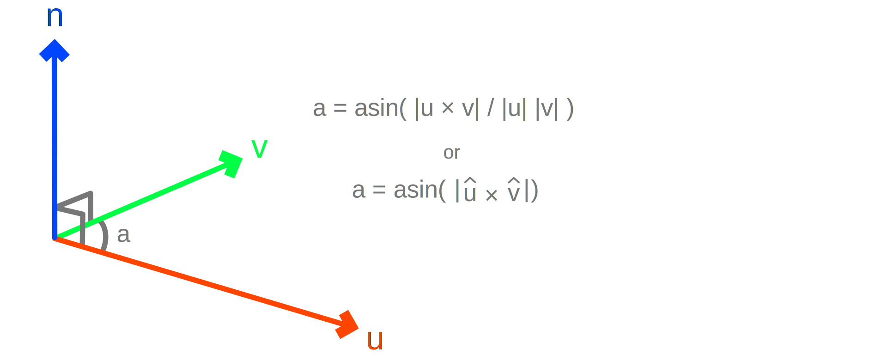
""" Inputs
"""
u = Vector3d( ux, uy, uz )
v = Vector3d( vx, vy, vz )
""" Outputs
"""
a = math.asin( Vector3d.CrossProduct(
u / u.Length, v / v.Length ).Length )
Coordinate Systems
With two non-parallel vectors u and v we can address every possible point in the 2D plane by using their linear combinations u * s + v * t, where s and t are real numbers. We can construct a coordinate system that spans the entire 3D space by computing the normal direction n = u × v and addressing every possible point using u * s + v * t + n * r, where r is also a real number.
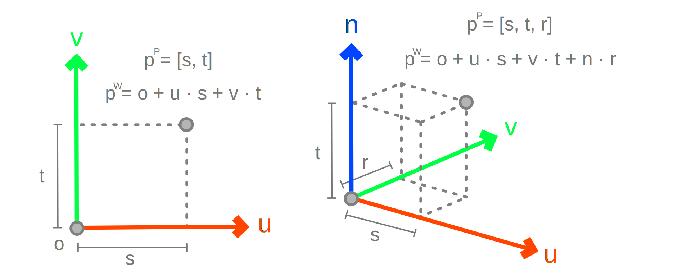
""" Inputs
"""
u = Vector3d( ux, uy, uz )
v = Vector3d( vx, vy, vz )
""" Outputs
"""
n = Vector3d.CrossProduct( u, v )
Orthogonal Bases
Suppose we have two non-parallel but also non-orthogonal vectors u and w and we wish to construct a pair of orthogonal vectors that span the same plane. We can achieve this by applying the cross products twice.
First we compute the normal vector n = u × w which is orthogonal to both u and w by definition. Then we need to choose one of the u and w vectors, for instance u, before performing the second cross product v = n × u with the normal. The new vector v will be orthogonal to both the u and n. But notice that any vector which is orthogonal to a plane's normal n is within the plane by definition. Therefore, the pair ( u, v ) form an orthogonal basis.
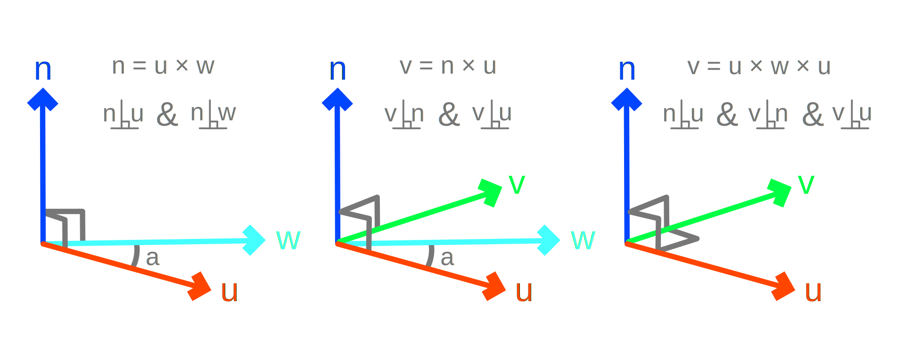
""" Inputs
"""
u = Vector3d( ux, uy, uz )
v = Vector3d( vx, vy, vz )
""" Outputs
"""
n = Vector3d.CrossProduct( u, w )
v = Vector3d.CrossProduct( n, u )
In general, we can form two distinct bases namely ( u, u × w × u ) and ( w, w × u × w ). It is just a matter of which of the original two vectors we wish to keep unchanged. In shorthand notation this can be computed as follows:
""" Outputs
"""
v = Vector3d.CrossProduct( Vector3d.CrossProduct( u, w ), u )
""" or """
v = Vector3d.CrossProduct( Vector3d.CrossProduct( w, u ), w )
By extension, if we have two non-parallel vectors u and w, which may or not be orthogonal, and we wish to form a coordinate basis with three mutually orthogonal vectors we apply the same logic and obtain ( u, v, n ) by computing ( u, u × w × u, u × w ).
Typically, after constructing such 2D or 3D basis vectors we often normalize them to unit-length; a process is also known as orthonormalization.
Unary Cross Product
Suppose we have only one vector u and we wish to compute another vector v such that they are orthogonal to one another. What we need is an auxiliary vector w such that we can use the cross product to compute v = u × w. Note that w can be really any random vector because eventually the cross product will ensure that u · v = 0. The only problem that can occur is choosing a w that is parallel, or near parallel, to u which will cause v = u × w = 0.
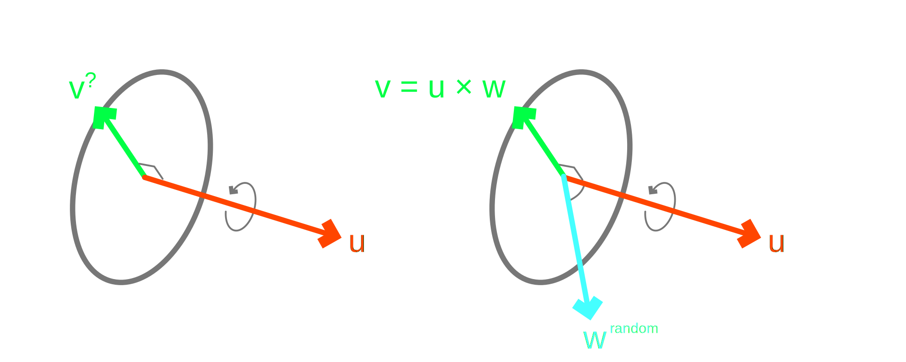
Geometrically, we need to select a vector such that the angle between u and w is furthest away from 0 and π, or closest to π/2. The closer the absolute value of the dot product between two vectors is to zero |u · w| -> 0, the closer their angle is to cos( a ) -> π/2.
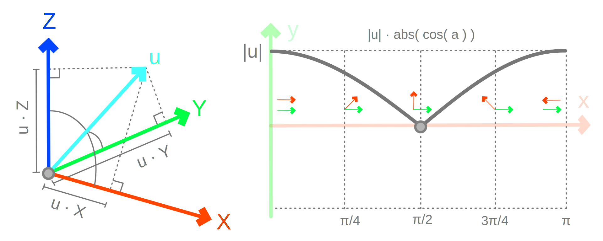
We may thus use one of the world vectors, X = [1, 0, 0], Y = [0, 1, 0] or Z = [0, 0, 1] for w based on which ever |u · X| = |u.X|, |u · Y| = |u.Y| and |u · Z| = |u.Z| has the smallest value, as seen below. This geometric construction may be considered as a unary form of the cross product because we are supplying only one vector and obtain another one which is orthogonal.
def Vector3d_UnaryCrossProduct( u ):
if( abs( u.X ) < abs( u.Y ) ):
if( abs( u.X ) < abs( u.Z ) ):
w = Vector3d.XAxis
else:
w = Vector3d.ZAxis
else:
if( abs( u.Y ) < abs( u.Z ) ):
w = Vector3d.YAxis
else:
w = Vector3d.ZAxis
return Vector3d.CrossProduct( u, w )